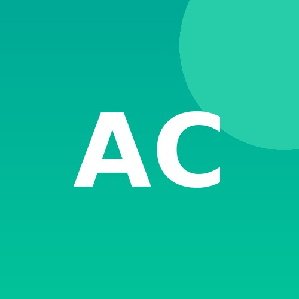
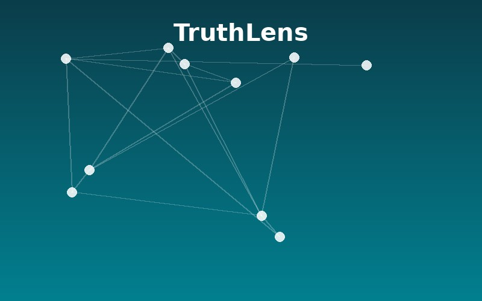

People
Faculty Lead
Dr. Elena Vasquez
Faculty Lead
Meridian University
PhD Students
Rohan Mehta
PhD Student
Meridian University

Amara Chukwu
PhD Student
Meridian University
School of Computing — Meridian University
We study how language technology shapes — and is shaped by — society.
We explore how natural language processing can be applied to real-world social challenges, combining machine learning with human-centered research. Tap a card below to learn more.
Dr. Elena Vasquez
Faculty Lead
Meridian University
Rohan Mehta
PhD Student
Meridian University

Amara Chukwu
PhD Student
Meridian University
Vasquez, E., Mehta, R. "Detecting Coordinated Misinformation Campaigns at Scale."
Mehta, R., Vasquez, E. "Cross-Lingual Toxicity Detection in Low-Resource Settings."
Chukwu, A. "Measuring Trust Erosion from AI-Generated Content Online."
Chukwu, A., Vasquez, E. "Low-Resource NLP for Under-Documented Languages."
Vasquez, E. "Human-Centered Evaluation of Content Moderation Systems."

An open-source toolkit for detecting coordinated misinformation on social platforms.

A dataset and benchmark for NLP in low-resource languages.
We're always interested in hearing from prospective PhD and MRes students working on NLP, computational social science, or AI safety. If you're interested in joining the lab, reach out with your CV and a short note on your research interests.
Get in TouchDr. Elena Vasquez
Email: elena.vasquez@meridian.edu
School of Computing, Meridian University, Sydney, Australia